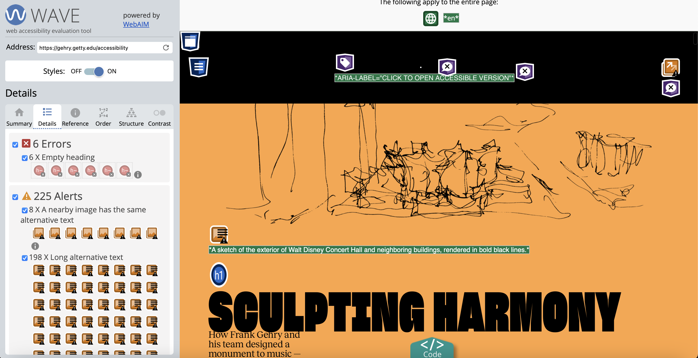
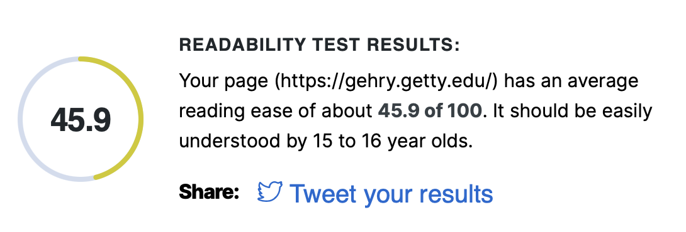

To assess the accessibility of websites, I wanted to consult ones I had already looked at. This opened my eyes to points of inaccessibility that I hadn't considered when previously using and analysing the sites and was a very interesting way to position myself in a place to try and be more accessible in my proposal.
To successfully evaluate each of these website's accessibility, I will be using the Web Accessibility Evaluation Tool (WAVE), the WebAIM Contrast Checker, and the WebFX's Readability Test.
Running the Super Shine Design website through the Web Accessibility Evaluation Tool (WAVE) I can see that there are a few issues with the site’s accessibility. One of the images used in the site doesn’t have any alt text to help visually impaired users. The page has used both low contrast and small text in areas, which is also an issue for visually impaired people as it may affect their ability to read the information on the page. There is also no language tag. This defines what language the site is in and allows screen readers to understand what language they should relay to the user. WebFX’s readability test scored the Super Shine site a 66.1, estimating that the website would be understood by 12–13-year-olds. This fits the purpose of the site as it is largely an advertising tool used to showcase the design work users can get done. Ads should be easily understood by all in order to be effective.
Amy Currell’s website has many accessibility errors when ran through the WAVE site, I’m guessing due to the visual nature of the site. There are 13 images missing alt text which would heavily affect a visually impaired person’s ability to enjoy the site. As Amy is a photography, the website relies on the visuals to speak for itself but doesn’t cater towards those who may not be able to see said visuals. There is also no heading structure making the hierarchy of headings difficult to distinguish and effecting accessibility of navigation. The site has as little text as possible, making the experience of a visually impaired person quite limited, especially without alt text included. There are no contrast or small text errors, however, making the little text that is present, legible. The black font on white background makes the reading of headings easy and has a large contrast. Amy Currell’s site got a score of 67.9 from WebFX’s readability test, and easily understood by 9-10-year-olds. This makes sense since the amount of text in the site is very slight.
I wanted to test the Getty’s website on the Walt Disney Concert Hall for accessibility as I noticed when analysing its use of audio previously that there was an accessible version of the site available. The non-accessible version has 14 errors and 35 alerts, compared with the accessible version’s 6 errors and 225 alerts. While the accessible version has a lot more alerts than the non-accessible version I have deducted that this is because of the specific attention to accessibility, and the developer’s appreciation that people not needing an accessible version are unlikely to interact with it. Most of the alerts were due to perceived issues with the alt text. There were 198 alerts for long alt text, which while so many images with alt text could get repetitive/tedious for users, it shows the developers’ commitment to accessibility and effort in making the images as descriptive as possible. The non-accessible version also had many errors for long alt text. The videos featured in both versions of the website has subtitles for users to read, although these are not closed captions. I can’t see where audio description or a transcript would be available for those who need it. The website has taken many measures to make the experience as accessible as possible, but still falls short in a couple of categories. The site uses a variety of background colours to distinguish between sections. The Web Accessibility in Mind’s (WebAIM) contrast checker gave every background and text colour combination a pass on all tests, showing that the contrast of the site is legible and accessible. WebFX has given the Getty website a 45.9 on their readability scale. This means it should be easily understood by 15-16-year-olds. As it is an informative site, aimed at educating the public this readability score makes sense as the site includes technical words to describe the process of designing and building the concert hall.


Reflection & Implementation of Accessibility Features
Accessibility is such an important issue and needs to be incorporated into web design. In my own site, I can recognise areas where I need to improve and areas where I naturally included accessible features. For example, the images featured on my site all have alt text, however, it is very simple and non-descriptive alt text – more of a title for the image in case the HTML failed to display it. After looking at the accessibility standards I have reviewed each image’s alt text and provided a more in-depth description to make the images clearer to those that can’t see them. While there is no audio to my videos, they still need captions to describe what is going on. My heading structure is simple and consistent – hopefully making sense to screen readers.
Below are the potential scripts that could be used for the video and audio files I have chosen:
Video 1
[social media site logos in bubbles floating across the screen on white background]
Video 2
[3 people sat round a table working together on their laptops and writing on paper]
Audio 1
[button press/click]
Audio 2
[mouse click]
Below are the videos from the previous page, but with captions included to make them more accessible.